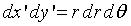
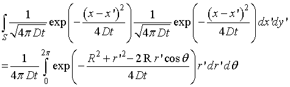
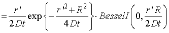
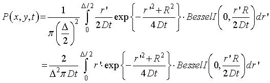

二次元拡散運動について-02
極座標変換から，

となります（導出方法は，ここ，をご覧ください）． 従って，

となります（指数の中の変換に関しては，ここ，をご覧ください）．
この計算は．．．とっても難しいので，Mathematica，にお願いしました． 結果は，

となります． 従って，

を得ることができます．
さて，先ほどの式，残念ながら，この積分は解くことができません． そこで再度登場するのが，Mathematica，です． 数値積分で計算できます．